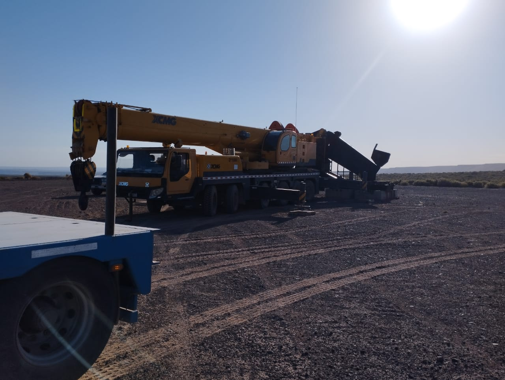

nuestros equipos
GRÚAS
Contamos con grúas desde 20 a 100 toneladas de capacidad y personal altamente calificado para desempeñar sus tareas, contando con profesionalismo y experiencia en el rubro.

HIDROGRÚAS
Contamos con hidrogrúas de 45 tonelámetros y barquillas para elevacion de personas.


CARRETONES Y SEMIRREMOLQUES
Contamos con carretones de 2,60 m de ancho y 10 m de largo y de 3,60 m de ancho y 13,50 m de largo. Además, disponemos de semirremolques de 2,60 m de ancho y 14 m de largo.